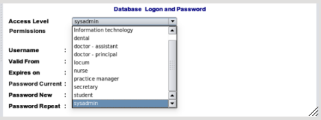
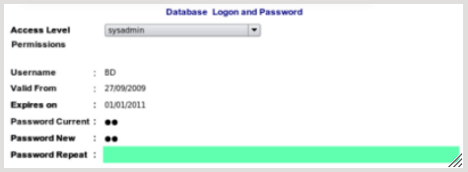

Logon and Security
Permissions
EasyGP permissions are set according to the category's shown in the dropdown combobox list shown above.
You should select the type of category you wish your staff member to belong to - the permissions for that group will appear
in the text area underneath the combo box.

Logon Details
- Logon Name should be chosen by the user. You will be prompted if duplicate logon names exist
- Validity Dates can be set from (Now) to an expirey date if desired though this may be left blank (indefinate).
- Password must be repeated.
After finished, click the Save button or hit the F12 key.
